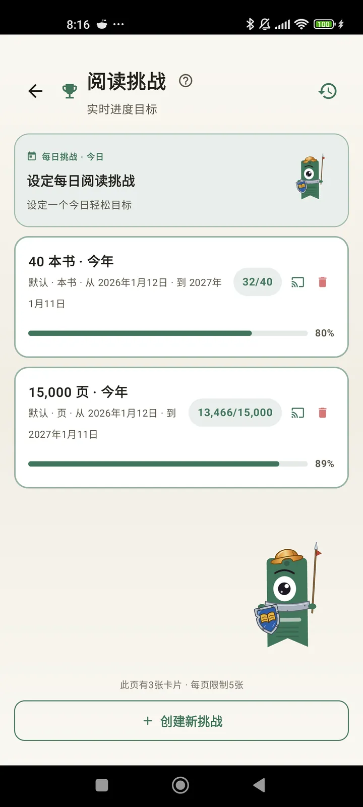

更了解作为读者的自己
挑战、Bingo、小部件等更多功能，帮你把阅读玩出花样。3.7 新增：挑战和 Bingo 小部件。

阅读挑战
按页数、连读或类型设定目标。免费最多 15 个进行中的挑战，Pro 不限数量。另有一个可自定义的每日挑战，不计入上限。

每日挑战
每天一个新目标。在午夜前完成挑战，就能保持你的连读。

阅读 Bingo
每月两张全新的主题 Bingo 卡。完成一行、一列或整张卡。

每周摘要
每周一，快速回顾你的一周：已读页数、总时间、连读，以及与上一周的对比。

月度回顾
每个月结束时，Lecturameter 会为你总结：页数、时间、读完的书、每天的节奏，以及你的本月之书。

Bingo 小部件 Pro
本月的 Bingo 卡始终一目了然，显示你已完成的格子和连成的线。

图书小部件 免费
在主屏幕上就能看到你正在读的书：封面、标题、作者、页数和进度百分比，始终保持最新。可调整大小，放在你想要的位置。
说真的，哥们，这款应用就像心理治疗。我从每天只读几页，变成了每天读大约 20 页，而且还在进步用户反馈，通过电子邮件发来

月度对比 Pro
不用打开应用，就能快速看到你最近几个月的情况。用柱状图显示每月的页数，并突出本月，让你一眼看出这个月比上个月是进步还是退步。

挑战小部件 Pro
在主屏幕上查看你进行中的挑战及其进度。在挑战页面中选择要显示哪些。